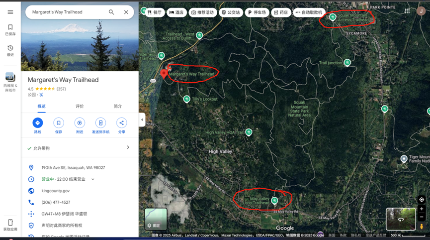

该线路经过的Trails包括：Margaret’s Way, Chirico Trail-Poo Poo Point, Squak Mountain, the High School Trail, and East Sunset Way
方案1：Squak Mountain State Park Natural Area
看地图：可以从Margaret’s Way上去，May Valley Loop Trailhead（SQUAK MOUNT STATE PARK站）下来（大约4.7mile， 用时两个半小时），或者从 Squak Mountain Access Trailhead（High School站）下来（大约6mile，三个小时）。也可以从May Valley Loop Trailhead上去，从High School那边下来（4.3mile，2多小时）。下面都是Trailhead Direct的公交站。

方案2：Poo Poo Point（PPP）
从PPP站下车，走Chirico Taril到PPP，从high school trail下来（5mile，约3个小时）。
上山看Mt Rainier 和Paragliding，风景不错，但是路比较陡。下山从high school trail下来比较缓和，好像下山也不会想看什么风景了